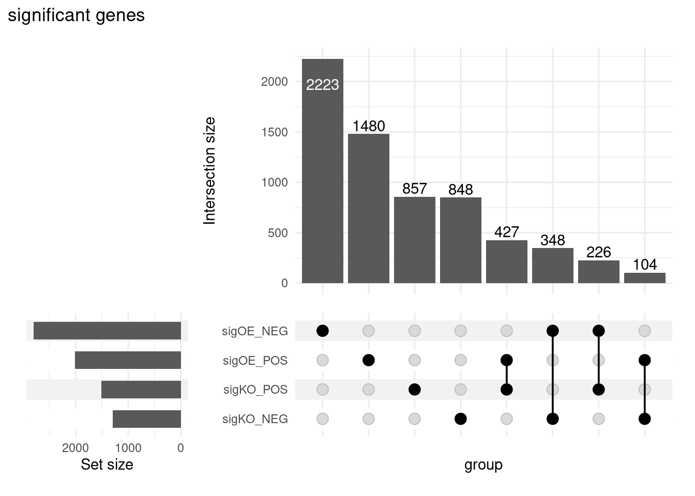

# load the libraries
library(DESeq2)
library(tidyverse)
library(RColorBrewer)
library(pheatmap)
library(DEGreport)
library(tximport)
library(ggplot2)
library(ggrepel)
library(limma)
library(ashr)
library(ComplexUpset)
library(UpSetR)Summarizing results from the Wald test
Learning Objectives
- Evaluate the number of differentially expressed genes produced for each comparison
- Construct R objects containing significant genes from each comparison
Summarizing results
To summarize the results table, a handy function in DESeq2 is summary(). Confusingly it has the same name as the function used to inspect data frames. This function when called with a DESeq results table as input, will summarize the results using a default threshold of padj < 0.1. However, since we had set the alpha argument to 0.05 when creating our results table threshold: FDR < 0.05 (padj/FDR is used even though the output says p-value < 0.05). Let’s start with the OE vs control results:
# read in the results objects
res_tableOE <- readRDS("../../out/object/res_tableOE.rds")
# Summarize results
summary(res_tableOE, alpha = 0.05)
out of 38903 with nonzero total read count
adjusted p-value < 0.05
LFC > 0 (up) : 2011, 5.2%
LFC < 0 (down) : 2797, 7.2%
outliers [1] : 28, 0.072%
low counts [2] : 21313, 55%
(mean count < 16)
[1] see 'cooksCutoff' argument of ?results
[2] see 'independentFiltering' argument of ?resultsIn addition to the number of genes up- and down-regulated at the default threshold, the function also reports the number of genes that were tested (genes with non-zero total read count), and the number of genes not included in multiple test correction due to a low mean count.
Extracting significant differentially expressed genes
Let’s first create variables that contain our threshold criteria. We will only be using the adjusted p-values in our criteria:
### Set thresholds
padj.cutoff <- 0.05We can easily subset the results table to only include those that are significant using the filter() function, but first we will convert the results table into a tibble:
# Create a tibble of results
res_tableOE_tb <- res_tableOE %>%
data.frame() %>%
rownames_to_column(var="gene") %>%
as_tibble()
res_tableOE_tb# A tibble: 57,761 × 7
gene baseMean log2FoldChange lfcSE stat pvalue padj
<chr> <dbl> <dbl> <dbl> <dbl> <dbl> <dbl>
1 ENSG00000000003 3526. -0.438 0.0775 -5.66 0.0000000153 4.25e-7
2 ENSG00000000005 26.2 0.0292 0.441 0.0662 0.947 9.73e-1
3 ENSG00000000419 1478. 0.384 0.114 3.37 0.000745 4.67e-3
4 ENSG00000000457 518. 0.229 0.102 2.24 0.0253 8.02e-2
5 ENSG00000000460 1160. -0.269 0.0815 -3.30 0.000959 5.76e-3
6 ENSG00000000938 0.402 -1.80 4.02 -0.446 0.655 NA
7 ENSG00000000971 11.4 -0.613 0.777 -0.789 0.430 NA
8 ENSG00000001036 2739. -0.0986 0.0811 -1.22 0.224 3.95e-1
9 ENSG00000001084 2561. -0.300 0.0941 -3.19 0.00144 8.09e-3
10 ENSG00000001167 2501. -0.303 0.0650 -4.65 0.00000330 4.76e-5
# ℹ 57,751 more rowsNow we can subset that table to only keep the significant genes using our pre-defined thresholds:
# Subset the tibble to keep only significant genes
sigOE <- res_tableOE_tb %>%
dplyr::filter(padj < padj.cutoff)
# Take a quick look at this tibble
sigOE# A tibble: 4,808 × 7
gene baseMean log2FoldChange lfcSE stat pvalue padj
<chr> <dbl> <dbl> <dbl> <dbl> <dbl> <dbl>
1 ENSG00000000003 3526. -0.438 0.0775 -5.66 0.0000000153 0.000000425
2 ENSG00000000419 1478. 0.384 0.114 3.37 0.000745 0.00467
3 ENSG00000000460 1160. -0.269 0.0815 -3.30 0.000959 0.00576
4 ENSG00000001084 2561. -0.300 0.0941 -3.19 0.00144 0.00809
5 ENSG00000001167 2501. -0.303 0.0650 -4.65 0.00000330 0.0000476
6 ENSG00000002016 921. -0.319 0.117 -2.72 0.00660 0.0280
7 ENSG00000002330 715. -0.457 0.130 -3.52 0.000435 0.00297
8 ENSG00000002549 1542. -0.285 0.0883 -3.23 0.00123 0.00707
9 ENSG00000002834 2669. -0.237 0.0541 -4.37 0.0000125 0.000148
10 ENSG00000002919 886. -0.413 0.0861 -4.79 0.00000164 0.0000260
# ℹ 4,798 more rowsExercise
MOV10 Differential Expression Analysis: Control versus Knockdown
- Using the same p-adjusted threshold as above (
padj.cutoff < 0.05), subsetres_tableKDto report the number of genes that are up- and down-regulated in Mov10_knockdown compared to control.
# read in the object
txi <- readRDS("../../out/object/txi.rds")
meta <- readRDS("../../out/object/metadata.rds")
## Create DESeq2Dataset object
dds <- DESeqDataSetFromTximport(txi, colData = meta, design = ~ sampletype)using just counts from tximportddsclass: DESeqDataSet
dim: 57761 8
metadata(1): version
assays(1): counts
rownames(57761): ENSG00000000003 ENSG00000000005 ... ENSG00000285978
ENSG00000285980
rowData names(0):
colnames(8): Irrel_kd_1 Irrel_kd_2 ... Mov10_oe_2 Mov10_oe_3
colData names(1): sampletype## Run analysis
dds <- DESeq(dds)estimating size factorsestimating dispersionsgene-wise dispersion estimatesmean-dispersion relationshipfinal dispersion estimatesfitting model and testing# check the coefficients based on the results
resultsNames(dds)[1] "Intercept"
[2] "sampletype_MOV10_knockdown_vs_control"
[3] "sampletype_MOV10_overexpression_vs_control"# build the design object
sampletype <- meta$sampletype
design <- model.matrix(~sampletype)
# print the model.matrix
design (Intercept) sampletypeMOV10_knockdown sampletypeMOV10_overexpression
1 1 0 0
2 1 0 0
3 1 0 0
4 1 1 0
5 1 1 0
6 1 0 1
7 1 0 1
8 1 0 1
attr(,"assign")
[1] 0 1 1
attr(,"contrasts")
attr(,"contrasts")$sampletype
[1] "contr.treatment"contrast <- makeContrasts(MOV10KO_vs_CTRL = sampletypeMOV10_knockdown,
MOV10OE_vs_CTRL = sampletypeMOV10_overexpression,
MOV10KO_vs_MOV10OE = sampletypeMOV10_knockdown - sampletypeMOV10_overexpression,
levels = design)Warning in makeContrasts(MOV10KO_vs_CTRL = sampletypeMOV10_knockdown,
MOV10OE_vs_CTRL = sampletypeMOV10_overexpression, : Renaming (Intercept) to
Interceptcontrast Contrasts
Levels MOV10KO_vs_CTRL MOV10OE_vs_CTRL
Intercept 0 0
sampletypeMOV10_knockdown 1 0
sampletypeMOV10_overexpression 0 1
Contrasts
Levels MOV10KO_vs_MOV10OE
Intercept 0
sampletypeMOV10_knockdown 1
sampletypeMOV10_overexpression -1# try to extract the same table from the makeContrasts construct
res_tableKO <- results(dds, contrast=contrast[,"MOV10KO_vs_CTRL"], alpha = 0.05)
# save the result object
saveRDS(res_tableKO, "../../out/object/res_tableKO.rds")
res_tableKO_tb <- res_tableKO %>%
data.frame() %>%
rownames_to_column(var="gene") %>%
as_tibble()
res_tableKO_tb# A tibble: 57,761 × 7
gene baseMean log2FoldChange lfcSE stat pvalue padj
<chr> <dbl> <dbl> <dbl> <dbl> <dbl> <dbl>
1 ENSG00000000003 3526. 0.0196 0.0858 0.229 0.819 0.923
2 ENSG00000000005 26.2 -0.561 0.501 -1.12 0.262 0.517
3 ENSG00000000419 1478. 0.200 0.127 1.58 0.114 0.314
4 ENSG00000000457 518. 0.421 0.111 3.78 0.000155 0.00243
5 ENSG00000000460 1160. 0.166 0.0888 1.87 0.0619 0.212
6 ENSG00000000938 0.402 0.000396 4.42 0.0000894 1.000 NA
7 ENSG00000000971 11.4 -1.31 0.889 -1.48 0.140 NA
8 ENSG00000001036 2739. 0.100 0.0899 1.12 0.265 0.520
9 ENSG00000001084 2561. 0.251 0.104 2.42 0.0157 0.0816
10 ENSG00000001167 2501. 0.137 0.0714 1.92 0.0552 0.196
# ℹ 57,751 more rowssigKO <- res_tableKO_tb %>%
dplyr::filter(padj < padj.cutoff)- How many genes are differentially expressed in the Knockdown compared to Control? How does this compare to the overexpression significant gene list (in terms of numbers)?
# overexpression
sigOE %>%
mutate(direction = sign(log2FoldChange)) %>%
group_by(direction) %>%
summarise(n = n())# A tibble: 2 × 2
direction n
<dbl> <int>
1 -1 2797
2 1 2011# knock-out
sigKO %>%
mutate(direction = sign(log2FoldChange)) %>%
group_by(direction) %>%
summarise(n = n())# A tibble: 2 × 2
direction n
<dbl> <int>
1 -1 1300
2 1 1510Attempt exploration of the common genes across the two tables
# library(ComplexUpset)
# library(UpSetR)
# generate a list for the set of genes either up or down
list_sigOE <- sigOE %>%
mutate(table = "sigOE") %>%
mutate(direction = case_when(log2FoldChange>0~"POS",
T~"NEG")) %>%
mutate(term = paste(table,direction,sep = "_")) %>%
split(f=.$term) %>%
lapply(function(x){
x %>%
pull("gene")
})
list_sigKO <- sigKO %>%
mutate(table = "sigKO") %>%
mutate(direction = case_when(log2FoldChange>0~"POS",
T~"NEG")) %>%
mutate(term = paste(table,direction,sep = "_")) %>%
split(f=.$term) %>%
lapply(function(x){
x %>%
pull("gene")
})
# concatenate the two lists
list_all <- c(list_sigOE,list_sigKO)
str(list_all)List of 4
$ sigOE_NEG: chr [1:2797] "ENSG00000000003" "ENSG00000000460" "ENSG00000001084" "ENSG00000001167" ...
$ sigOE_POS: chr [1:2011] "ENSG00000000419" "ENSG00000004399" "ENSG00000004799" "ENSG00000005187" ...
$ sigKO_NEG: chr [1:1300] "ENSG00000002330" "ENSG00000002549" "ENSG00000004777" "ENSG00000005073" ...
$ sigKO_POS: chr [1:1510] "ENSG00000000457" "ENSG00000002822" "ENSG00000003056" "ENSG00000003756" ...# generate the plot
ComplexUpset::upset(fromList(list_all),colnames(fromList(list_all)),wrap=T) + ggtitle("significant genes")
# pull all the genes from each term
df1 <- lapply(list_all,function(x){
data.frame(gene = x)
}) %>%
bind_rows(.id = "path")
head(df1) path gene
1 sigOE_NEG ENSG00000000003
2 sigOE_NEG ENSG00000000460
3 sigOE_NEG ENSG00000001084
4 sigOE_NEG ENSG00000001167
5 sigOE_NEG ENSG00000002016
6 sigOE_NEG ENSG00000002330# pull all the unique genes
df2 <- data.frame(gene=unique(unlist(list_all)))
head(df2) gene
1 ENSG00000000003
2 ENSG00000000460
3 ENSG00000001084
4 ENSG00000001167
5 ENSG00000002016
6 ENSG00000002330# generate the intersections
df_int <- lapply(df2$gene,function(x){
# pull the name of the intersections
intersection <- df1 %>%
dplyr::filter(gene==x) %>%
arrange(path) %>%
pull("path") %>%
paste0(collapse = "|")
# build the dataframe
data.frame(gene = x,int = intersection)
}) %>%
bind_rows()
head(df_int,n=20) gene int
1 ENSG00000000003 sigOE_NEG
2 ENSG00000000460 sigOE_NEG
3 ENSG00000001084 sigOE_NEG
4 ENSG00000001167 sigOE_NEG
5 ENSG00000002016 sigOE_NEG
6 ENSG00000002330 sigKO_NEG|sigOE_NEG
7 ENSG00000002549 sigKO_NEG|sigOE_NEG
8 ENSG00000002834 sigOE_NEG
9 ENSG00000002919 sigOE_NEG
10 ENSG00000004059 sigOE_NEG
11 ENSG00000004139 sigOE_NEG
12 ENSG00000004142 sigOE_NEG
13 ENSG00000004455 sigOE_NEG
14 ENSG00000004779 sigOE_NEG
15 ENSG00000004897 sigOE_NEG
16 ENSG00000005073 sigKO_NEG|sigOE_NEG
17 ENSG00000005075 sigOE_NEG
18 ENSG00000005100 sigKO_POS|sigOE_NEG
19 ENSG00000005175 sigOE_NEG
20 ENSG00000005249 sigKO_NEG|sigOE_NEG# show the intersections
df_int %>%
group_by(int) %>%
summarise(n=n()) %>%
arrange(desc(n))# A tibble: 8 × 2
int n
<chr> <int>
1 sigOE_NEG 2223
2 sigOE_POS 1480
3 sigKO_POS 857
4 sigKO_NEG 848
5 sigKO_POS|sigOE_POS 427
6 sigKO_NEG|sigOE_NEG 348
7 sigKO_POS|sigOE_NEG 226
8 sigKO_NEG|sigOE_POS 104Now that we have extracted the significant results, we are ready for visualization!